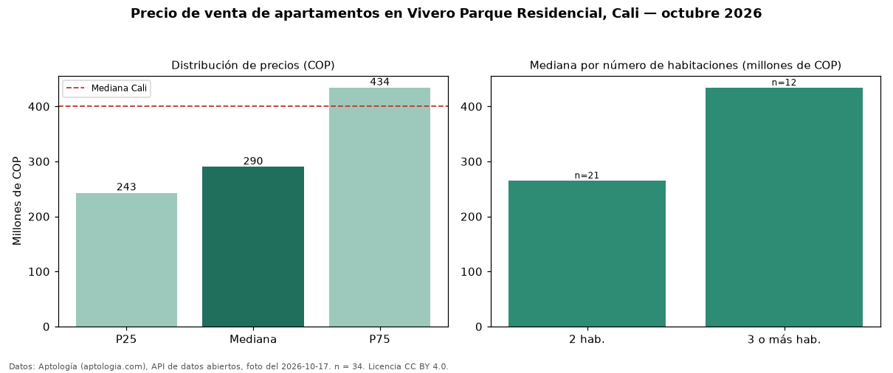

Precio de venta de apartamentos en Vivero Parque Residencial, Cali — octubre 2026
En Vivero Parque Residencial, Cali, la mediana de precio de venta de apartamentos es COP 290 millones, según 34 avisos vigentes. Comparado con la mediana de la ciudad, COP 400 millones, la diferencia es de 28 % por debajo. El segmento con más oferta es el de 2 habitaciones (21 avisos, mediana COP 265 millones); pasar de 2 habitaciones a 3 o más habitaciones sube la mediana 64 %. Por mediana, es el puesto 48 de 74 barrios de Cali con al menos 30 avisos de apartamentos en venta: en la franja media. La dispersión es moderada: el cuartil superior (COP 434 millones) es 1,8 veces el inferior (COP 243 millones). El aviso más barato pide COP 207 millones y el más caro COP 600 millones. 56 % de los avisos incluye parqueadero, y su mediana (COP 405 millones) está 40 % por encima de la general. Datos: Aptología (aptologia.com), API de datos abiertos, licencia CC BY 4.0 — https://www.aptologia.com/venta/cali/vivero-parque-residencial. Archivos: PDF de 2 páginas, CSV con las cifras y gráfica PNG.

| Avisos únicos | 34 |
|---|---|
| Percentil 25 | COP 242.977.500 |
| Mediana | COP 290.000.000 |
| Percentil 75 | COP 434.000.000 |
Fuente: avisos vigentes de portales inmobiliarios recopilados por Aptología, deduplicados (mínimo 30 avisos únicos por celda). Precios pedidos, no cerrados. Fecha: 2026-10-18.